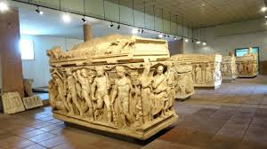
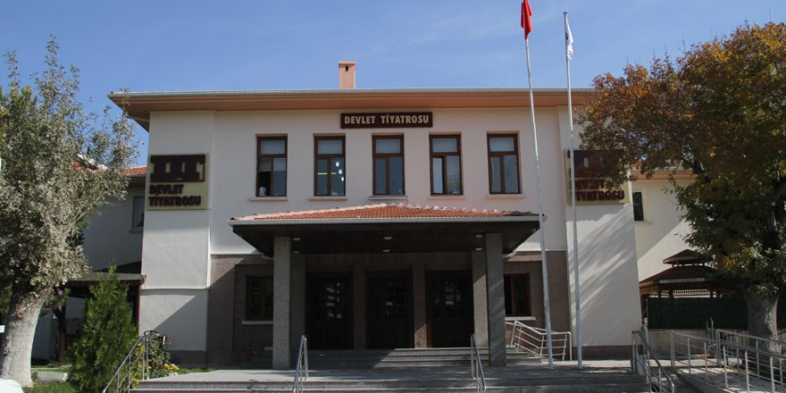
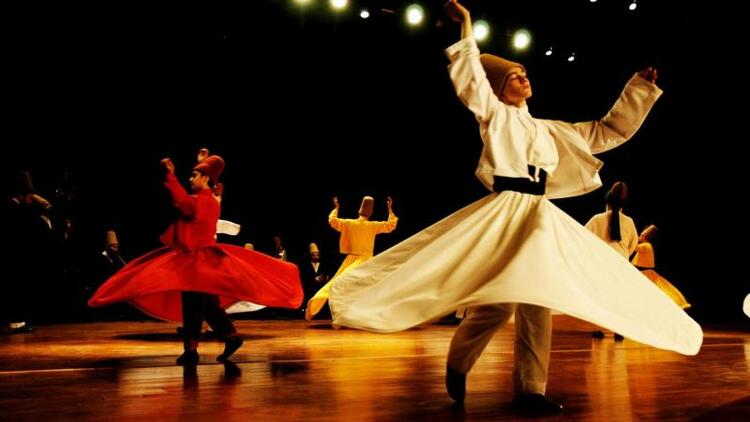
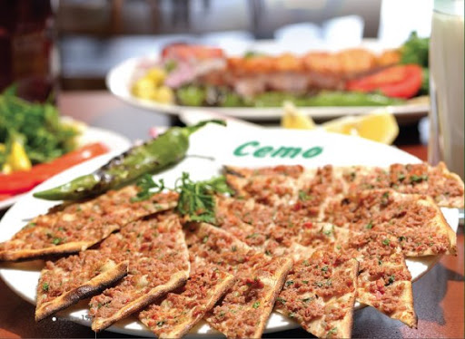
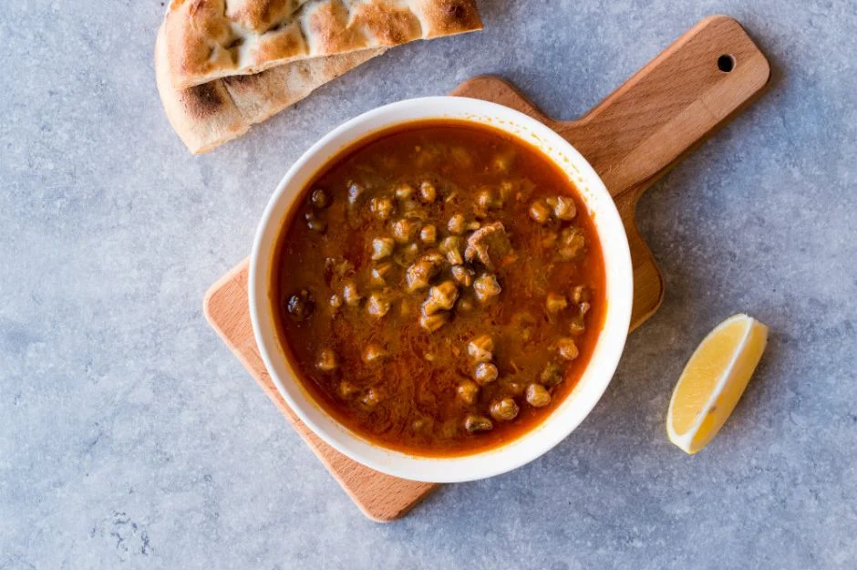
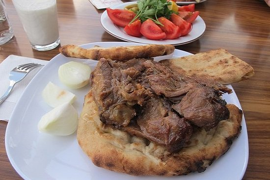
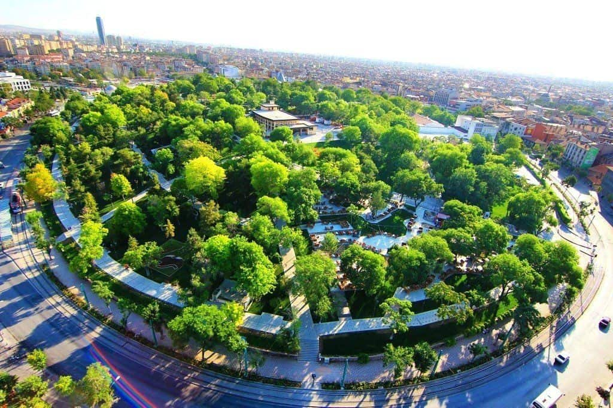
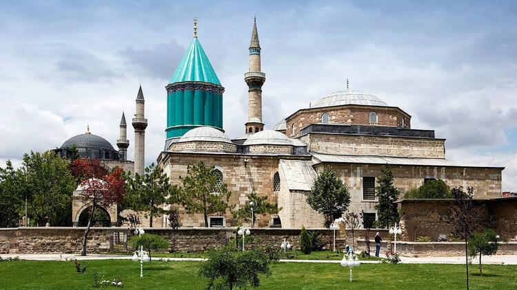
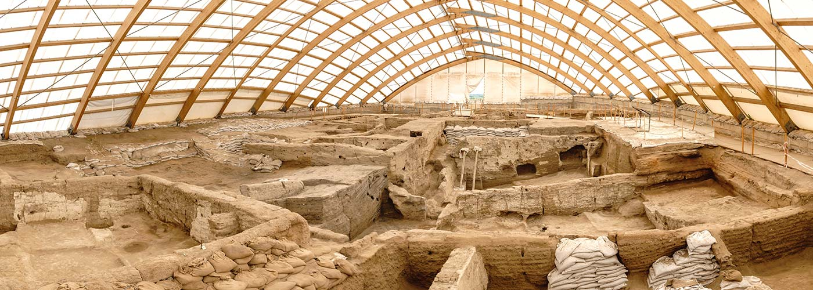

KONYA
Müzeler

1. Mevlana Müzesi
2. Konya Arkeoloji Müzesi
3. Konya Atatürk Evi Müzesi
4. Karatay Medresesi
(Çini Eserler Müzesi)
5. Sırçalı Medrese
(Mezar Anıtları Müzesi)
6. İnce Minareli Medrese
(Taş-Ahşap Eserleri Müzesi)
7. Konya Etnografya Müzesi
8. Konya İzzet Koyunoğlu Şehir Müzesi
Tiyatrolar
 Konya Devlet Tiyatrosu, 997 aralık ayından bu yana, başta Konya olmak üzere, çevre il ve ilçelere çalışmalarını kesintisiz olarak sürdüren bölge tiyatrosudur.Etkinlikler

Vuslat Yıldönümü Uluslararası Anma Törenleri (Şeb-i Arûs Törenleri)
Şeb-i Arûs
Mevlânâ Celaleddin-i Rumi'nin ölüm yıl dönünlerinde 17 Aralık tarihlerine
denk gelen haftalarda yapılan ve "Vuslat Yıldönümü Uluslararası Anma
Törenleri" olarak isimlendirilmeye başlanılan törenler, halk arasında
Şeb-i Arus Şenlikleri olarak da anılmaktadır.
MUTFAK
Etli Ekmek
Koyun eti, soğan, domates ve biber iyice karıştırılır ve uzunlamasına açılan hamurun üzerine yayılarak ekmek fırınında pişirilir. Ayran ile beraber tüketilir, özelikle düğün ve sünnet törenlerinde misafirlere ikram edilir.
Bamya Çorbası
Bamya çorbası, düğünlerin ve özel günlerin vazgeçilmezidir. İpe dizilerek kurutulmuş çiçek bamyalar ve küçük kuşbaşı doğranmış dana eti, limon suyuyla birlikte çorbaya asıl lezzetini verir
Fırın Kebabı

Fırın kebabı yalnızca mevsime göre kuzu ve koyun etiyle yapılır.
Fırın kebabında sadece ön kol ve kaburga etleri kullanılır. Belli bir
aşamadan geçen etler büyük bir bakır legene alınır. Taş fırın içinde meşe
odunu ateşinde pişer.
TURİZM
Alaeddin Tepesi
Alâeddin Tepesi, Türkiye'nin Konya ilinin merkezine bağlı Karatay ilçesinde yer alan tepe. 450 x 350 metre boyunda olup, 20 metre yüksekliğinde olan tepe, höyük olarak adlandırılan protohistorik yerleşim yerlerinden biriydi.
Mevlana
Mevlana Müzesi, Konya'da bulunan, eskiden Mevlâna'nın dergâhı olan yapı kompleksinde, 1926 yılından beri faaliyet gösteren müzedir. "Mevlana Türbesi" olarak da anılır. (Yeşil Kubbe) denilen Mevlana'nın türbesi dört fil ayağı (kalın sütun) üzerine yapılmıştır.
Çatalhöyük
Çatalhöyük, Orta Anadolu'da, günümüzden 9 bin yıl önce yerleşim yeri olmuş, çok geniş bir Neolitik Çağ ve Kalkolitik Çağ yerleşim yeridir. Doğu ve batı yönlerinde yan yana iki höyükten oluşmaktadır. Çatalhöyük günümüz Konya Şehri'nin güneydoğusunda, Hasandağı'nın yaklaşık olarak 136 kilometre uzağında, Konya Ovası'na hakim buğdaylık arazide bulunmaktadır. Doğu yerleşimini, en son Cilalı Taş Devri sırasında ovadan 20 metre yüksekliğe kadar ulaşan bir yerleşim birimi oluşturmaktadır. Ayrıca, batıya doğru da ufak bir yerleşim birimi ve birkaç yüz metre doğuya doğru da bir Bizans yerleşimi bulunmaktadır.